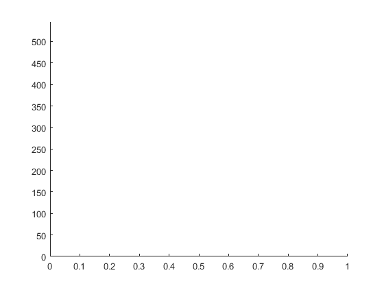

load PZND_time_series_4 K=20000; Pparts=zeros(length(tt),K); Zparts=Pparts; Dparts=Pparts; Nparts=Pparts; gammaparts=Pparts; PZND_init=[0.15; 0.06; 0.65; 0.14]; sig=0.02; Pparts(1,:)=PZND_init(1)+sig*randn(1,K); Zparts(1,:)=PZND_init(2)+sig*randn(1,K); Nparts(1,:)=PZND_init(3)+sig*randn(1,K); Nresamp=[]; minP=0.0018; Nt=length(tt); for j=1:K if Zparts(1,j)<=0 Zparts(1,j)=minP; end end w=ones(1,K)/K; Dparts(1,:)=1-Pparts(1,:)-Zparts(1,:)-Nparts(1,:); gammaparts(1,:)=0.1+0.1*rand(1,K); wsave=0*Pparts; wsave(1,:)=w; figure axis([0 1 0 kk]) hold on
Plot values of P Z N D gamma as we run through the loop
for kk=1:Nt-1%length(t)
kk; %to see where what observation we are on in the loop
[t, y] = ode45(func, t_span, y0) -- the syntax used here
[t,PZNDg]=ode45(@RHS_eqs,[tt(kk) tt(kk+1)],[Pparts(kk,:), Zparts(kk,:), Nparts(kk,:), Dparts(kk,:), gammaparts(kk,:)]);
Pparts(kk+1,:)=PZNDg(end,1:K);
Zparts(kk+1,:)=PZNDg(end,K+1:2*K);
Nparts(kk+1,:)=PZNDg(end,2*K+1:3*K);
Dparts(kk+1,:)=PZNDg(end,3*K+1:4*K);
gammaparts(kk+1,:)=gammaparts(kk,:);
infl=2; %inflation facotor, feel free to change, needs to be >=1
plot(1:2000,Pparts(kk,:),'.', 'MarkerSize', 10); drawnow
w = we^(-(P_mod-P_data)^2)/2*infl*sig^2
w=w.*exp(-(Pparts(kk+1,:)-Pdata(kk+1)).^2/(2*infl*sig^2));
w=w/sum(w);
Keff=1/(sum(w.^2));
if Keff<400 %threshold for effective particle number, should be 1%-5% of K Nresamp=[Nresamp, kk]; samps=randsample(K,K,'true',w); %resampling gammaparts(kk+1,1:K/2)=gammaparts(kk+1,samps(1:K/2))+0.01*randn(1,K/2); for jj=1:K/2 if gammaparts(kk+1,jj)>0.2 || gammaparts(kk+1,jj)<0.1 gammaparts(kk+1,jj)=gammaparts(kk,jj); end end gammaparts(kk+1,K/2+1:end)=0.1+0.1*rand(1,K/2); % set this half back to uniform from 0.1 to 0.2 Pparts(kk+1,:)=Pparts(kk+1,samps); Dparts(kk+1,:)=Dparts(kk+1,samps); Zparts(kk+1,:)=Zparts(kk+1,samps); Nparts(kk+1,:)=Nparts(kk+1,samps); w=ones(1,K)/K; end wsave(kk+1,:)=w;
Error using plot Not enough input arguments. Error in particle_filter_for_PZND_model (line 83) plot
end
plot